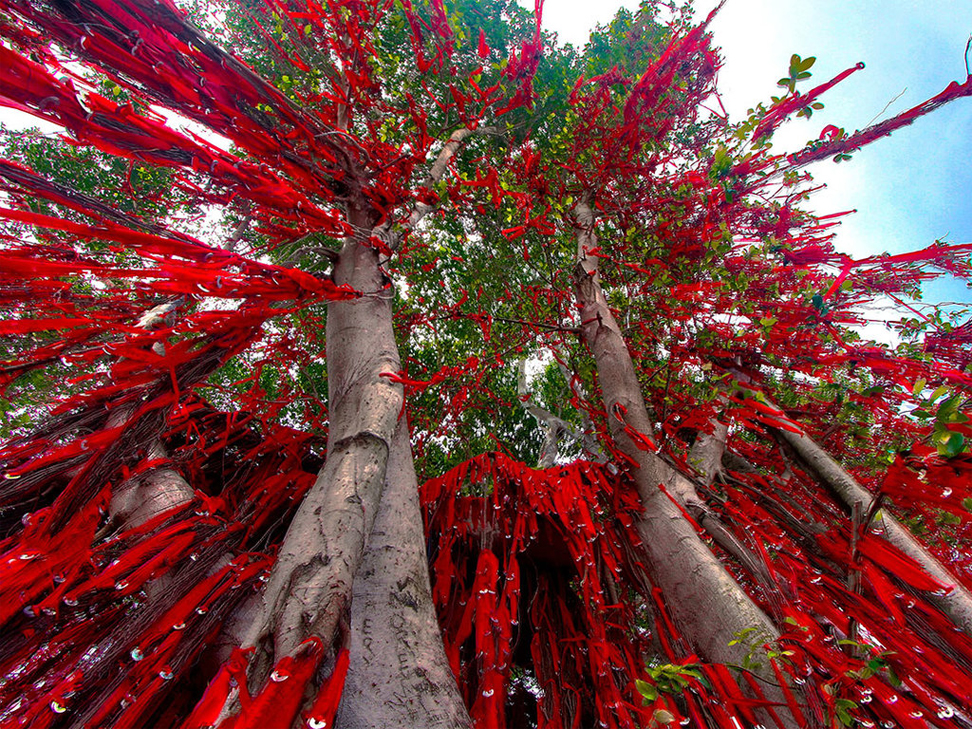
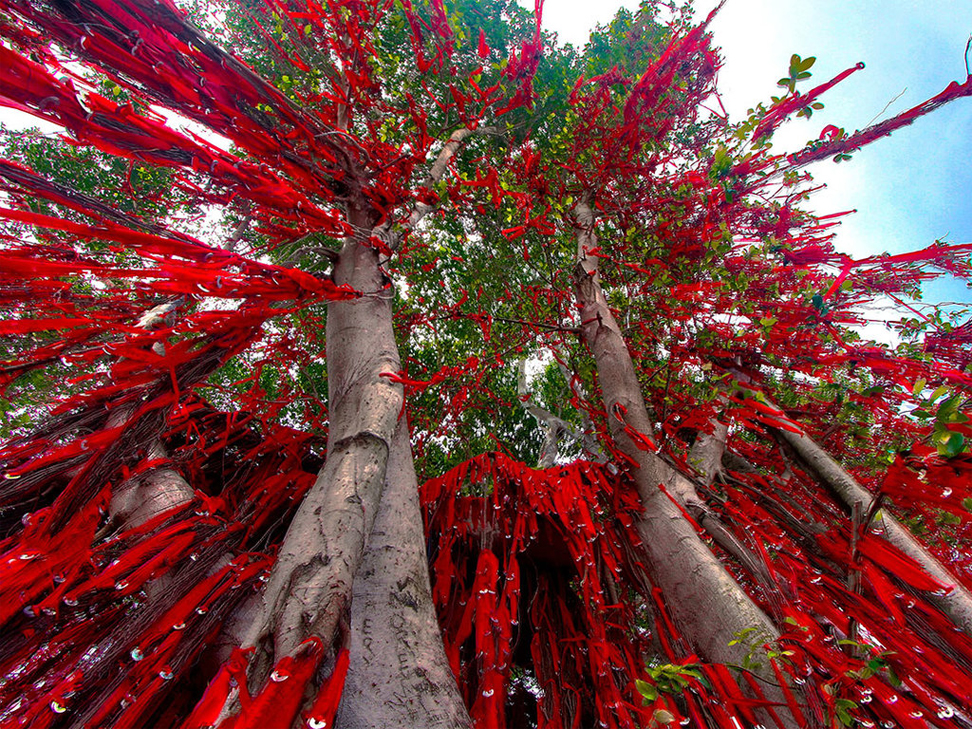
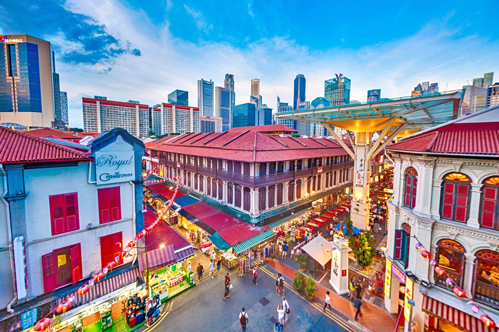
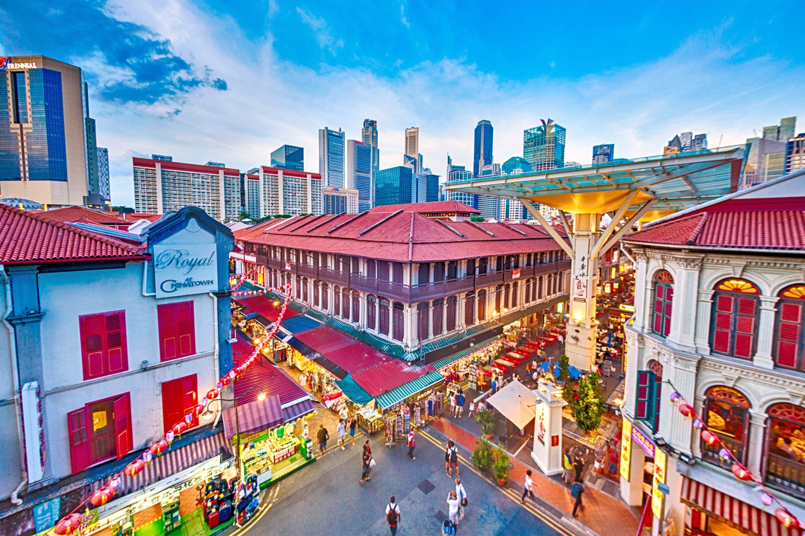

My Travel
(Place I visited)
Travelling can simply make you happier by removing you from your regular routine, Working or studying nonstop for days, weeks, or months may help you reach your goals. You should, however, occasionally take a vacation from ongoing stress.
Sekinchan, Selangor
 

Sekinchan is a fishing village since it is situated on the northwest Selangor lowlands, which extended from Tanjung Karang all the way to Sabak Bernam as well as the Straits of Malacca. It can be referred to as the "Rice bowl of Selangor" because to its location on the flat, unbroken plains and there are many rice fields.
Malacca
Malacca is a state in Malaysia that is next to the Strait of Malacca and is situated on the southern tip of the Malay Peninsula. Malacca City, the nation's capital, is a renowned historic city. Additionally, Malacca is home to Jonker Walk, which is a very well-known street. It's the Chinatown neighbourhood of Malacca City, in the state of Malacca. On weekends, it bustles with shoppers looking for a variety of cuisine and souvenirs as well as entertainment.
Pulau Langkawi, Kedah

Pulau Langkawi is located in the state of Kedah. It's surrounded by a cluster of small islands and is situated in the north-western part of Peninsular Malaysia.. It always has year-round sunshine, enough rainfall, and cooling breezes.
Thailand


Thailand draws visitors from all over the world thanks to its stunning beaches, exciting nightlife, and mouthwatering cuisine. Bangkok serves as the region's transportation hub and is home to many visitor sites, including the Royal Palace, temples, floating markets, and amazing street cuisine. The northern city of Chiang Mai is home to some of the world's best night markets and several historic temples.
Taiwan

Taiwan is home to some of the most breathtaking landscapes on earth. Taiwan's fascinating temple culture and architecture should be experienced and explored. Highlights not to be missed include the magnificent Baoan Temple near Taipei, the enormous complex at Foguangshan, and the architectural masterpiece known as Longshan Temple in Lukang. Additionally, the night market in Taiwan is a must-visit location for tourists.
Singapore
 

Off the southernmost point of the Malay Peninsula in Southeast Asia, there is a sunny, tropical island called Singapore. Singapore has all the charms that are likely to enthral visitors, including centuries-old temples, lively hawker districts, and beautiful vegetation. Singapore is renowned for both its immaculate cleanliness and low crime rate.